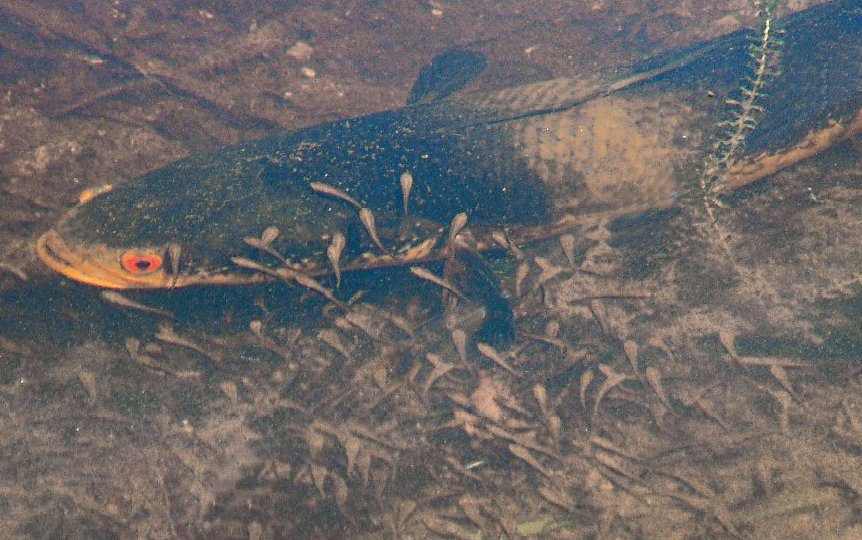

सौरGreat Snakehead
Channa marulius · Channidae · FSH-0009

- Scientific name
- Channa marulius (Hamilton, 1822)
- Family
- Channidae
- Hindi
- सौर
- Status here
- native
- IUCN
- LC
When to look कब देखें
Present all year.
सौर / Great Snakehead
Channa marulius (Hamilton, 1822) — Channidae
सौर (ग्रेट स्नेकहेड) — पूर्वी उत्तर प्रदेश के बड़े तालाबों, झीलों और घाघरा नदी के गहरे क्षेत्रों में पाई जाने वाली एक विशाल, आक्रामक और शिकारी मीठे पानी की मछली है। इसे "बुलआई स्नेकहेड" भी कहा जाता है। इसका सिर सांप की तरह चपटा और हड्डियों से ढका होता है, जिस पर बड़े अनियमित शल्क (scales) होते हैं। इसका शरीर लंबा और बेलनाकार होता है, जिस पर गहरे रंग के धब्बे और पूंछ के पास नारंगी किनारों वाला एक स्पष्ट काला निशान (ocellus) होता है। यह मछली 1 मीटर से अधिक लंबी हो सकती है और इसका वजन 10 किलोग्राम तक पहुंच सकता है। यह पानी के बाहर भी सांस ले सकती है क्योंकि इसके पास एक सहायक श्वसन अंग (accessory respiratory organ) होता है।
Quick Identification त्वरित पहचान
| Feature | Description |
|---|---|
| Size | Very large fish (typically 45–100 cm total length); can exceed 100 cm and 10 kg |
| Head | Depressed, snake-like head covered in large, plate-like scales; eyes set forward |
| Colouration | Greyish-green to dark brown dorsally; pale belly; 5–6 dark blotches on the flanks |
| Ocellus | A distinctive black spot ringed with bright orange (eye-spot) at the upper base of the tail |
| Fins | Long, single dorsal and anal fins running down the back; tail fin is rounded and dark |
Field tip: Look in deep village ponds or river margins. Watch for a large, dark, snake-like fish rising slowly to the surface to gulp air before diving back down. The orange-ringed black spot on the tail is visible in clear water.
Morphology आकारिकी
Biometrics (typical measurements for adult specimens in the middle Gangetic basin):
| Measurement | Range |
|---|---|
| Standard length (SL) | 400–850 mm |
| Total length (TL) | 450–1000 mm |
| Weight | 1500–9000 g |
Body structure: The body is elongated, cylindrical anteriorly and laterally compressed towards the tail. The head is large, broad, and depressed, resembling a snake's head. The scales are cycloid and relatively large, especially on the head. A single, long dorsal fin begins behind the pectoral fins and runs nearly to the caudal peduncle, containing 45–55 soft rays. The anal fin is also long, containing 28–36 soft rays.
Color details: Dark olive-green or dark greyish-brown dorsally, fading to a creamy-white or yellowish-white belly. A series of 5 to 6 large, dark, vertical blotches are present along the sides of the body below the lateral line, interspersed with white spots. The caudal fin is dark, with the upper portion of the base bearing a highly prominent black ocellus (eye-spot) surrounded by an orange-red ring.
Behaviour & Ecology व्यवहार और पारिस्थितिकी
Apex predator and air-breather.
- Suprabranchial chamber: Possesses an accessory air-breathing organ (suprabranchial chamber) lined with vascularized epithelium. This allows the fish to absorb atmospheric oxygen directly, enabling it to survive in stagnant, oxygen-poor mud or travel short distances across wet grass to find new water bodies.
- Ambush hunter: Remains motionless near aquatic weeds or submerged logs, waiting for prey to swim close before launching a lightning-fast forward strike.
- Spawning nest construction: Spawning pairs build a circular nest in dense weeds by clearing a space of about 1 meter in diameter near the pond shore.
Ecological Role पारिस्थितिक भूमिका
Apex aquatic predator.
- Population regulator: As a top predator in lentic ecosystems, it controls the populations of small herbivorous fish, frogs, and aquatic insects, preventing overpopulation and maintaining ecological balance.
- Parental protection: Unlike many fish species that abandon their eggs, the parents guard the nest aggressively. They swim in circles around the bright orange-yellow hatchlings, protecting them from predatory birds and other fish for several weeks.
Life Cycle / Phenology जीवन चक्र
- Spawning season: June to August, coinciding with the monsoon season when water levels rise and weed cover increases.
- Nesting and fertilization: The female lays up to 10,000 amber-coloured eggs that float at the center of the weed nest. The male fertilizes them.
- Incubation: Eggs hatch in 48–54 hours depending on water temperature.
- Larval care: The larvae are bright yellow-orange and swim in a tight ball. Both parents guard the school of young. The parental care lasts for 4–5 weeks until the young grow to about 5–6 cm in length, change color to brown, and disperse.
Host Plants or Prey आहार
Primary food items:
- Fish: Feeds on smaller fish species including barbs (such as [FSH-0015 Pool Barb], if present), perchlets, and catfish.
- Amphibians: Adult frogs (such as [AMP-0006 Asian Grass Frog]) and tadpoles.
- Other prey: Large aquatic beetles, water bugs, crabs, and young waterbird chicks swimming on the surface (like [BRD-0040 Bronze-winged Jacana] chicks).
Predators / Natural Enemies शत्रु
- Birds: Fish eagles, storks, and large herons (like the Grey Heron) hunt young snakeheads.
- Reptiles: Large Checkered Keelback snakes target juveniles.
- Conspecifics: Larger adult snakeheads are cannibalistic and readily eat smaller juveniles.
Agricultural / Human Relevance कृषि प्रासंगिकता
Prized game fish and culture threat.
- Aquaculture impact: In Basti district, they are considered a major pest in commercial carp culture ponds. If a single pair of snakeheads enters a Rohu [FSH-0001 Rohu] or Catla [FSH-0002 Catla] nursery pond, they can consume the entire stock of carp fry within a few weeks.
- Fisheries value: Highly valued as a food fish due to its firm, boneless meat. It fetches a very high price in local fish markets (such as Basti and Faizabad). It is also targeted by recreational anglers using frogs as live bait in the Ghaghra river.
Expected Locally स्थानीय रूप से अपेक्षित
Not a field record. Written from published accounts for eastern Uttar Pradesh. No confirmed local sighting yet — if you have seen it, that is what the atlas needs.
अभी तक स्थानीय पुष्टि नहीं। यह विवरण प्रकाशित स्रोतों से है, किसी अवलोकन से नहीं।
Commonly found in the larger perennial water bodies (dahi and talab) and canals of Basti district. Spawning pairs can be observed near the banks of grassy ponds during July, where they aggressively defend their schools of orange fry, sometimes jumping out of the water to deter observers or animals that get too close.
Distribution वितरण
Global range: Widespread in South and Southeast Asia, including India, Pakistan, Nepal, Bangladesh, Sri Lanka, Myanmar, Thailand, and southern China.
In India: Found throughout the freshwaters of the plains, especially in major river systems like the Ganges and Indus.
In Uttar Pradesh: Common in all major rivers, tributaries, reservoirs, and perennial wetlands.
In Basti district / eastern UP: Found in deep pools of the Ghaghra, Kuwano, and Ami rivers, as well as large historical ponds.
Research Questions शोध प्रश्न
Anyone can investigate these | कोई भी इन प्रश्नों की जाँच कर सकता है
- What is the survival rate of snakehead fry when guarded by both parents vs. only one parent? — Monitor guarded nests in Basti ponds and record parent counts.
- How does the presence of the tail ocellus (eye-spot) affect the attacks of predatory birds on young snakeheads? — Analyze avian striking behavior on juvenile models with and without the spot.
- What is the maximum distance a Great Snakehead can travel over wet land during monsoon nights? — Track marked individuals during heavy rains.
- How do carp farmers in Basti traditionally identify and exclude snakeheads from their culture ponds? / बस्ती के मछली पालक अपने तालाबों से सौर मछली की पहचान करने और उन्हें बाहर निकालने के लिए किन पारंपरिक तरीकों का उपयोग करते हैं? — Interview local fish farmers.
- Does the clearing of marginal aquatic weeds for agriculture reduce the nesting success of this species? / कृषि के लिए जलीय खरपतवारों की सफाई का इस प्रजाति के घोंसला बनाने की सफलता पर क्या प्रभाव पड़ता है? — Compare nest densities in weed-cleared vs. undisturbed ponds.
Similar Species मिलती-जुलती प्रजातियाँ
| Species | Key Difference | हिंदी |
|---|---|---|
| Channa striata (Snakehead Murrel) | Smaller (30–60 cm); has chevron-shaped dark bands on the flanks; lacks the orange-ringed tail ocellus | गिरई / मुरेल — छोटी, धारीदार बगल, पूँछ पर धब्बा रहित |
| Channa punctata (Spotted Snakehead) | Much smaller (15–30 cm); greyish-green with black dots; lacks tail ocellus; very common in shallow ditches | गरई — बहुत छोटी, काले बिंदुओं वाला शरीर |
| Channa barca (Barca Snakehead) | Rare; greenish-black with numerous black and red spots; highly valued; found only in Brahmaputra/Ganges main rivers | बरका स्नेकहेड — अत्यंत दुर्लभ, चमकीले धब्बे |
Field rule: Large size (up to 1m), snake-like head with plate scales, dark blotches on flanks, and a prominent black ocellus ringed in orange on the upper caudal fin base identify the Great Snakehead.
Taxonomy & Classification वर्गीकरण
Original description. Francis Hamilton described the Great Snakehead as Ophiocephalus marulius in 1822 in his work An Account of the Fishes found in the river Ganges and its branches (pp. 65, 367). The type locality was the Ganges river system. The genus name Channa is derived from the Greek channe, which refers to a wide-mouthed marine fish. The specific name marulius is a Latinized version of the local Bengali name for the fish.
Subspecies. Monotypic — no subspecies are currently recognised in the Indian population.
Family and order placement. Placed in the order Perciformes, family Channidae.
Phylogenetic notes. Channa marulius belongs to the "marulius group" of snakeheads, which represents a distinct evolutionary lineage of large-bodied species characterized by the presence of a caudal ocellus, sister to Southeast Asian taxa like Channa marulioides.
IUCN status rationale. Listed as Least Concern (LC) globally due to its vast geographic distribution, high reproductive capacity, and tolerance of varied habitats, though local populations are threatened by overfishing and wetland loss.
Photo Gallery फोटो गैलरी
References संदर्भ
- Hamilton, F. (1822). An Account of the Fishes found in the river Ganges and its branches. Archibald Constable & Co., Edinburgh, pp. 65, 367. [original description]
- Talwar, P. K. & Jhingran, A. G. (1991). Inland Fishes of India and Adjacent Countries. Vol. 2. Oxford & IBH Publishing Co., New Delhi.
- Jayaram, K. C. (2010). The Freshwater Fishes of the Indian Region. 2nd ed. Narendra Publishing House, Delhi.
- Benziger, A. et al. (2011). Unraveling a Gondwanan relic: the phylogenetic history of the snakehead fishes (Teleostei: Channidae). PLoS ONE, 6(8), e23208.
- IUCN SSC Freshwater Fish Specialist Group (2024). Channa marulius. IUCN Red List of Threatened Species. Ver. 2024.
- GBIF Occurrence Data — Channa marulius, Uttar Pradesh (2010–2025).
Source file: species/fauna/fish/great_snakehead.md